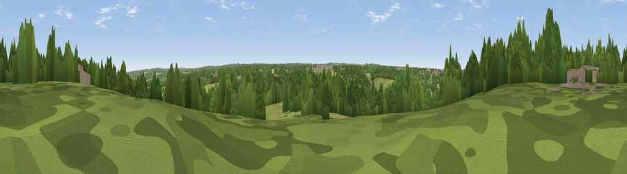

Viewpoint near Leaves Green
#41332 in England · top 55% of its area beats it · near Leaves GreenWhere it is
The exact computed spot (TQ 42025 63325). Click the marker for map links.
The view, rendered

A 360° render of this exact spot computed from the terrain model, tree cover and land cover — summer colours, afternoon light, calibrated against photographs of famous viewpoints. Real trees, hedges and buildings will differ in detail.
The panorama
Grey silhouette: terrain skyline in each direction (720 bearings, Earth curvature and refraction included). Dashed green: skyline with trees (+15 m) and buildings (+8 m) as obstacles. Blue strip: how far the ground is visible on each bearing.
Where the view opens
Wedge length = distance to the farthest visible ground on that bearing (vegetation-aware). Rings at 10, 25 and 50 km.
What fills the view
43% woodland · 37% grassland · 11% cropland · 9% built-up
Angular shares of the visible panorama (visual magnitude), not map area. Landscape diversity 0.52 (0–1 Shannon).
Key numbers
More beautiful places nearby
The staircase of upgrades: each row has a higher view potential than everything closer. Driving times are estimates from straight-line distance, calibrated against real road routing — check an actual route before setting out.
| Place | Direction | Drive | Score |
|---|---|---|---|
| Viewpoint near Addington | WNW · 5 km | ~12 min | 32.7 |
| Viewpoint near Woldingham | SSW · 7 km | ~15 min | 40.1 |
| Viewpoint near Westerham | SSE · 7 km | ~15 min | 43.5 |
| Viewpoint near Tatsfield | SSW · 8 km | ~16 min | 53.1 |
| Viewpoint near Limpsfield | SSW · 9 km | ~17 min | 55.9 |
| Viewpoint near Limpsfield | SSW · 9 km | ~18 min | 64.0 |
| Viewpoint near French Street | SSE · 13 km | ~24 min | 64.5 |
| Viewpoint near Shipbourne | SE · 18 km | ~31 min | 66.2 |
51.35126, 0.03811 · source: screening · position refined by local search. Computed location — check access rights before visiting.